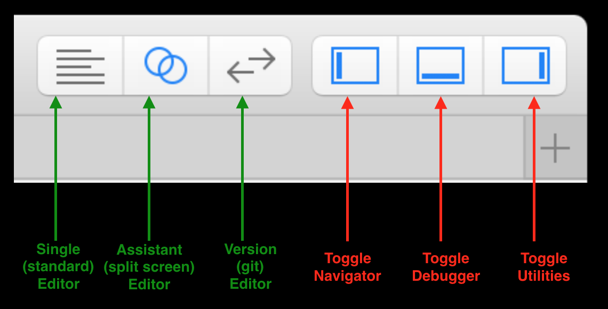
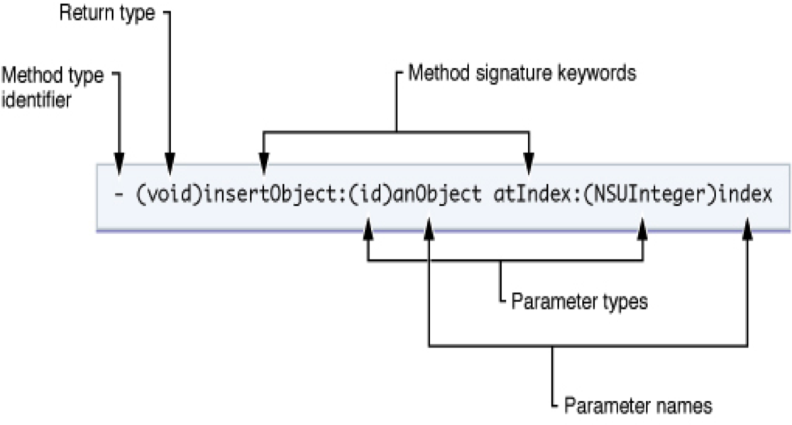
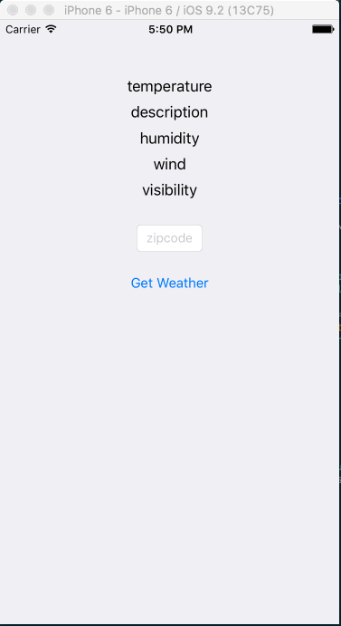
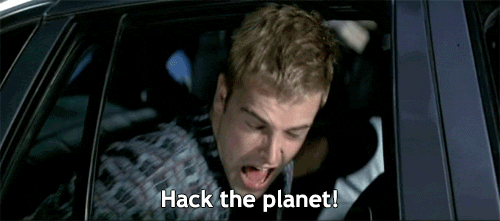

In this lab, we cover the basics of the Xcode IDE, the iOS Simulator, Xcode's Documentation Viewer, and the Objective-C (or the Swift) programming language. By the end of lab, we'll have built a simple iPhone application that displays weather from the wunderground.com API.
To complete this lab, you'll need to download Xcode. If you don't have a Mac of your own, you can use one of the Macs in the EECS lab, 38-530.
You can do this lab in either Swift or Objective-C. We provide instructions for both languages. Swift is a more modern language; for example, it eliminates the need for separate header files, supports type inference, and uses syntax for function calls and string operations that is closer to that of other newer languages. If you do not have experience in either language, we recommend using Swift.
First, a little about Xcode's layout:
 bottom: debugger (bottom left:variables, bottom right:console)")

Some helpful Xcode shortcuts and tips
| View Documentation: | ⌥+Click |
| Open Docs: | ⇧⌘0 |
| Go to Definition: | ⌘+Click |
| Open file Quickly: | ⇧⌘O |
⌘ = Command | ⌥ = Option | ⇧ = Shift
Some helpful iOS Simulator shortcuts and tips
| Press Home Button: | ⇧⌘H |
| Rotate Left | ⌘← |
| Rotate Right | ⌘→ |
| If the keyboard isn't appearing/disappearing as expected: | Hardware -> Keyboard |
Xcode Documentation
Shortcut: ⇧⌘0

It's kind of amazing.

It syncs locally, which takes a while

But once it's downloaded, it's crazy fast.

It includes ready-to-build example projects for downloads.

You can get to class documentation by option + clicking the class in question.
Some info about Objective-C
Let's get this out of the way. Objective-C Looks odd.
Unfortunately, I'm running out of gifs to explain it to you. Enough fooling around. Let's bring the buzz-feed part of this lecture to a halt.
Let's look at some actual syntax
In the following examples, the code on top is Objective-C and the code on the bottom can be thought of as Python, though it really is just a generic OOP language.
Passing Messages to Objects:
![[object performAction]; object.performAction();](images/lab0/example1.png)
This above example is clear enough. We're calling a method (performAction) on an object (object). In Objective-C parlance we're passing a message to an object, telling it, "Run your implementation of the method performAction." The name of a method is referred to as a selector.
![[object performAction:firstParameter]; object.performAction(firstParameter);](images/lab0/example2.png)
Here, we call a method which takes one parameter. Note that methods in Objective-C indicate their parameters with colons.
![[object performAction:firstParameter withTwoParameters:secondParameter]; object.performAction(firstParameter, secondParameter);](images/lab0/example3.png)
Note that method parameters are interspersed with method names, -performAction:withTwoParameters:. This is similar to keyword arguments in Python, except none of the parameters is optional. If you take this into consideration when naming your methods, you will find Objective-C code can be very readable and self-documenting.
Declaring Methods on Objects:
Declaring methods looks odd, too. Sorry.
(Some of images were stolen from https://ashfurrow.com/blog/why-objective-c-is-hard-to-learn/. There's a good post there.)
Declaring Properties on Objects
@property (copy, nonatomic) NSString *foo;
In the above case, NSString is the class, and foo is the property name. The asterisk (*) signifies that foo is a pointer.
The copy and nonatomic attribute refer to the storage and atomicity of the property, respectively. Properties are strong and atomic by default.
Properties that are strong maintain strong references to an object. They will remain in memory until either the object that points to them is deleted, or they are deleted directly. This has to do with Automatic Reference Counting (ARC), which is similar to garbage collection in other languages.
Properties that are atomic are fully retrieved or set, even if called simultaneously from different threads.
Here is a concise Stack Overflow post on property attributes. The Apple documentation on encapsulating data is also quite helpful.
Objective-C Syntactic Sugar
There's some nice stuff built in, that's meant to simplify the syntax. For example, initializing arrays
NSArray *fizz = [NSArray arrayWithObjects:@"foo", @"bar", nil]
becomes
NSArray *fizz = @[@"foo", @"bar"]
NSNumber *num = [NSNumber numberWithInt:2];
becomes
NSNumber *num = @"2"
NSString *str = [myObj strProperty];
becomes
NSString *str = myObj.strProperty;
You might notice that syntactic sugar often begins with an @ symbol. This is often the case.
Keep in mind that some of this syntactic sugar is quite recent. When you find old StackOverflow answers, they may use older notation.
Some References
- If you'd like to know more about Objective-C, here's a user's guide
- Ray Wenderlich has the best style guide out there. It'll make your code easier to read and maintain.
- This Objective-C book is the staff favorite
- This iOS book is full of nice tutorials
- And then there's this indispensable reference for Objective-C's block syntax (which are similar to lambdas and closures).
- Additionally, Apple has excellent developer docs. In particular, their introduction to Objective-C.
- If you want a deeper understanding of Objective-C and the why and how of the Cocoa APIs, Apple's Concepts in Objective-C Programming is your best source.
Some info about Swift
As Swift is relatively easier than Objective-C, we don't have a long tutorial for it.
You may check Apple's programming guide of Swift for details.
On to your lab assignment!
You're building an app that basically loads the weather.
The fetchWeather is asynchronous. If there's no network, the app shouldn't hang or crash.
We're using the Wunderground API. Here's a key for you: b901013c3100de66. This key will work for the lab, but has some usage limitations. You may probably want to get your own key for free from Wunderground. The JSON looks like http://api.wunderground.com/api/0b719bec26ab96ac/conditions/q/02139.json.
We've recorded videos with exact instructions on how to complete the lab in Object-C and Swift. The goal is to get you comfortable with Xcode, the docs, the simulator, and Objective-C (or Swift). Maybe you'll even learn some shortcuts from watching them.
The videos build off of one another. You can do the assignment in your own way, or in the exact way it's done in the videos. It's entirely up to you.
Video 1 - Hello World
We create the project and print "Hello World". You'll also notice that we resize the simulator, and click on some of the menu bars. This just so that you see what those buttons do.
Video 2 - Making a Weather Class
Here, we define a weather class with some properties and methods
Video 3 - Flushing out the Weather Methods
We add some details to the weather methods from the previous video. In the next video, we instantiate the weather class, and debug it. This video contains an intentional error. We'll debug it in the next one. Note that the API shown in the Objective-C video is actually out of data.
Video 4 - Instantiating and Debugging Weather
There was an error with weather. We illustrate some of the tools the debugger has.
Using the debugger will make your life much, much easier, and we think it's worth learning.
Video 5 - Adding a button to the UX, defining constraints
We add a new button to the interface and define its constraints.
We're pressing the control key while dragging from the button to the .h file
Video 6 - Enabling the button
This is pretty straightforward. We're making the button actually do stuff now.
Again remember to press the control key while dragging!
Video 7 - Adding more UI Elements
We add some labels to display the weather. Note how we're using stack view here.
There are at least 5 ways to lay out elements in Xcode. This is probably the fastest.
Video 8 - Making the UI Labels Update
We now update the UI Labels when results are fetched from the API
You may notice us fixing a misplaced view warning. The view was well defined, but the placement wasn't done correctly, so we ask Xcode to update the placement and the error goes away
Video 9 - UI Polish
This is about showing and hiding the keyboard.
Video 10 - Blocks and Async
We update the app to work asynchronously. Mobile devices often have very flaky connections, so it's important to know how to deal with them.
Confused about what's going on? Checkout this handy guide and this reference.
We don't have a video here. Instead, we put the code of two important functions here. You may try them, or write your own.
"Weather.swift":
fetchWeatherForZip functionfunc fetchWeatherForZip(zip:String, completionHandler: @escaping (Bool) -> Void) -> Void { NSLog("Getting conditions in %@", zip) let urlString : String = "https://api.wunderground.com/api/\(APP_ID)/conditions/q/\(zip).json" let weatherURL = URL(string: urlString) let session = URLSession.shared let request = URLRequest(url: weatherURL!, cachePolicy: URLRequest.CachePolicy.useProtocolCachePolicy, timeoutInterval: 5.0) let task = session.dataTask(with: request, completionHandler: {(data, response, error) in let ret = self.parseData(data: data) DispatchQueue.main.async(execute: {()->Void in completionHandler(ret)}) }) task.resume() }"ViewController.swift"
weatherButton function (Button Handler)@IBAction func weatherButton(_ sender: UIButton) { NSLog("Get Weather") sender.isEnabled = false weather.fetchWeatherForZip(zip: zipCode.text!, completionHandler: {(ret: Bool)->Void in if(ret) { NSLog("Succeeded") self.temperature.text = self.weather.currentTemp self.desc.text = self.weather.weatherDescription self.humidity.text = self.weather.relativeHumidity self.wind.text = self.weather.windString self.visibility.text = self.weather.visibilityKm } else{ NSLog("Failed") } sender.isEnabled = true }) }
That's it for now. Have a good one!
